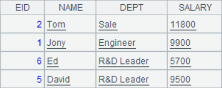
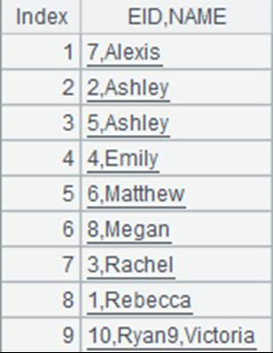

Description:
Plot elements the chart will use.
Syntax:
G.plot(e,ai:xi:Ai,…)
Note:
The function plots a chart element named e in canvas object G and sets value of chart element parameter ai as xi. If the parameter value has the corresponding coordinate axis, it is Ai.
You can check all available chart element parameters in Chart Elements. Among the chart elements, text element has properties for plotting the 2D barcode.
Parameter:
|
G |
The canvas object. |
|
e |
Chart element name, for example, MapAxis, NumericAxis, EnumAxis, DateAxis, BackGround, Column, Line, Dot, Polygon, Text, Legend, Sector and so on. |
|
ai |
Parameters of chart element, for example, the name, logicData, and physical Data parameters in the chart element of MapAxis. For more details, please refer to sections about chart element parameters. |
|
xi |
Parameter value. |
|
Ai |
Coordinate axis corresponding to the parameter value. |
Return value:
Chart element information
Example:
Plot a legend:
|
|
A |
|
|
1 |
[Apple,Banana,Peach,Strawberry] |
|
|
2 |
=canvas() |
Define a canvas object. |
|
3 |
=A2.plot("Legend","legendText":A1,"x":0.81,"y":0.2,"width":90) |
"Legend" means the chart element to be plotted is a legend. "legendText":A1 means the legend’s text content is Apple,Banana,Peach,Strawberry; "x":0.81 / "y":0.2 is the starting coordinate position in x/y axis on the canvas; when the value is greater than 0 and less than and equivalent to 1, it means the percentage of the coordinate in the canvas’s width/length. "width":90 means the width of legend area is 90 pixel. |
|
4 |
=A2.draw(500,200) |
Plot a legend whose width is 500 pixels and height is 200 pixels. View the result legend as follows:
|

Plot a two-dimensional barcode:
|
|
A |
|
|
1 |
=canvas() |
Define a canvas object. |
|
2 |
=A1.plot("Text", "text":"hello word!", "width":200, "height":200, "barType":256, "data2":250) |
Use Text element to plot a 2D barcode. Use Text element to plot a 2D barcode. "text":"hello word!" means the text content is hello word! "width":200,"height":200 means both width and height of the 2D barcode are 200 pixels; "barType":256 means the barcode type is 2D barcode; "data1":250,"data2":250 means both the horizontal coordinate and the vertical coordinate of the canvas pixel are 250 pixels. |
|
3 |
=A1.draw(400,400) |
Draw a chart whose width and height are both 400 pixels. Click Browse Graph and the following 2D barcode is displayed:  |
Plot a column chart:
|
|
A |
|
|
1 |
=demo.query("select DEPT, avg(SALARY) AVG_SALARY from employee group by DEPT") |
Retrun a table sequence, whose data is as follows:  |
|
2 |
=canvas() |
Define a canvas object. |
|
3 |
=A2.plot("NumericAxis", "name":"y", "location":2, "labelFont":"Calibri", "labelOverlapping":true) |
"NumericAxis" means plotting a numeric axis; "name":"y" means the numeric axis is y axis; "location":2 specifies the location where the numeric axis is displayed; "labelFont":"Calibri" specifies that the label font is Calibri; "labelOverlapping":true means labels can be overlapping. |
|
4 |
=A2.plot("EnumAxis", "name":"x", "categories":A1.(DEPT), "labelFont":"Arial") |
"EnumAxis" means plotting enumerated values; "name":"x" means the numeric axis is x axis; "categories":A1.(DEPT) means the specified category values are A1’s DEPT column values; "labelFont":"Arial" means label font is Arial; |
|
5 |
=A2.plot("Column", "axis1":"x", "data1":A1.(DEPT), "axis2":"y", "data2":A1.(AVG_SALARY), "text":A1.(AVG_SALARY)) |
"Column" sets properties of the chart element; "axis1":"x" means axis1 is x axis; "data1":A1.(DEPT) means axis1’s logical coordinates are the sequence of table sequence A1’s DEPT field values; "axis2":"y" means axis 2 is the enumerated axis; "data2":A1.(AVG_SALARY) means axis2’s logical coordinates are the sequence of table sequence A1’s AVG_SALARY field values; "text":A1.(AVG_SALARY) means the column’s label texts are table sequence A1’s AVG_SALARY field values. |
|
6 |
=A2.draw@p(1000,350) |
Plot the column chart with 1000-pixel width and 350-pixel height; @p option enables returning the canvas as png format. Browse the chart as follows:
|

Related function: